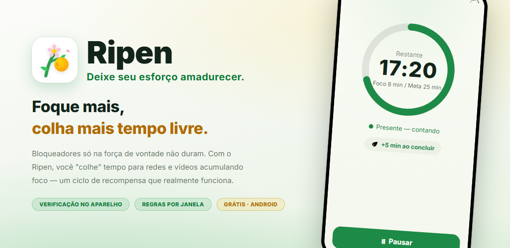
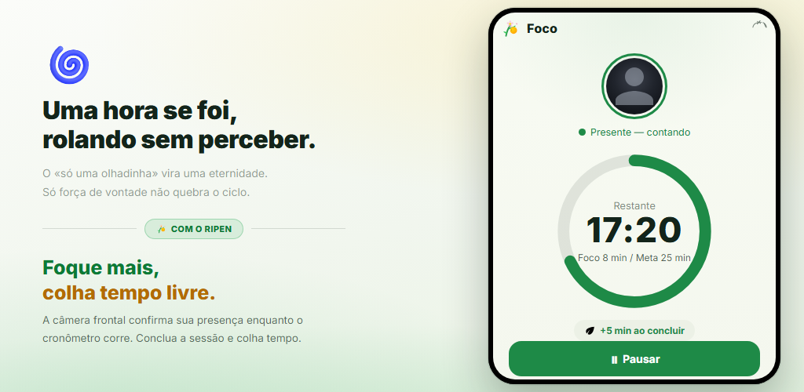
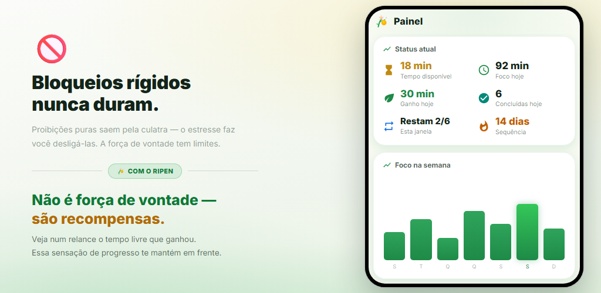
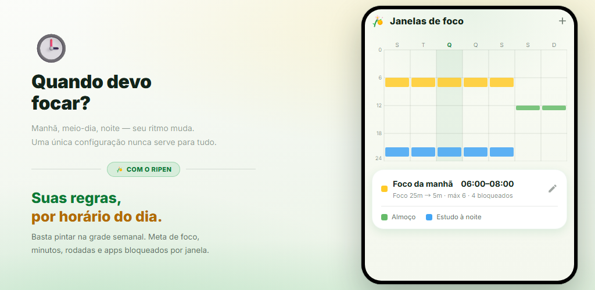
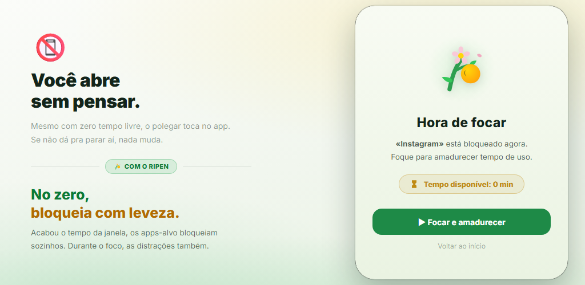
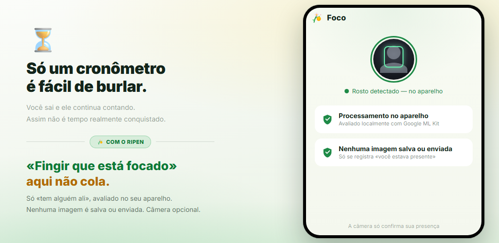

Ciclo de recompensas
Sempre que você conclui um timer de foco, ganha tempo para redes sociais e apps de vídeo. São as recompensas, não a força de vontade, que mudam seu comportamento.
Bloqueadores de apps que dependem só de força de vontade não duram. O Ripen é um app de hábitos com recompensas: quanto mais você foca e estuda, mais tempo “colhe” para redes sociais e apps de vídeo. A verificação de presença pela câmera acontece no seu aparelho, e você pode desativá-la em cada faixa de horário.
Android 8.0+ · Grátis · Sem anúncios · Sem conta

Sem configurações complicadas. Você só decide quando focar, por quanto tempo e quanto tempo ganha de volta.
Pinte a grade semanal para escolher os dias e horários em que quer focar
Com a verificação de presença ativada, a câmera frontal confirma que você está ali enquanto o timer corre
Cada rodada concluída rende os minutos que você definiu (um quiz de palavras também vale)
Com 0 minuto restante, os apps escolhidos são bloqueados com suavidade
Nas janelas com verificação de presença ativada, o timer de foco só avança enquanto seu rosto está diante da tela. Cumpra a meta e você ganha os minutos definidos para redes sociais ou apps de vídeo. Rodadas abandonadas antes do fim não rendem nada.

Veja de relance o tempo disponível, o foco de hoje, o ganho de hoje e sua sequência de dias. Gráficos de tendência semanal e mensal e um mapa de calor por hora revelam quando você foca melhor.

É só pintar a grade semanal para definir os dias e horários em que quer focar. Cada janela tem sua própria meta de foco, minutos por rodada, limite de rodadas, apps bloqueados e verificação de presença pela câmera. Fora das janelas, você está livre.

Quando o tempo de uma janela acaba, abrir um dos apps escolhidos mostra uma tela de bloqueio. Apps que distraem também são bloqueados durante as sessões de foco. E o “bloqueio de ajustes” impede que você afrouxe as regras depois.

Um timer sozinho continua contando mesmo se você sair. O Ripen usa a câmera frontal só para avaliar se há um rosto diante da tela, e faz isso no seu aparelho. Nenhuma imagem é salva ou enviada. Você também pode escolher janelas sem câmera.

Veja como você foca, colhe tempo e vê seus apps serem bloqueados quando ele acaba.
Vire o jogo do “quero parar, mas não consigo”, com recompensas.
Sempre que você conclui um timer de foco, ganha tempo para redes sociais e apps de vídeo. São as recompensas, não a força de vontade, que mudam seu comportamento.
A câmera frontal avalia apenas se você está diante da tela. O processamento é feito no seu aparelho, e nenhuma imagem é salva ou enviada. Você pode desativá-la em cada janela.
Defina várias janelas por dia e horário. Cada janela tem sua própria meta de foco, minutos, limite de rodadas e apps bloqueados.
Acerte um número definido de quizzes de vocabulário em inglês (4 alternativas) para ganhar uma rodada. Cerca de 10.000 palavras por nível CEFR, com teste de nível, lista de revisão e seus próprios baralhos.
Minutos que você pode usar assim que uma janela começa, antes mesmo de focar. Eles se somam às recompensas do foco.
Um recurso de compromisso que impede você de mexer nos ajustes para conseguir mais lazer. Mudanças que afrouxam as regras exigem agendar um desbloqueio e esperar de 1 a 30 dias.
Tendências de foco, calendário de foco, taxa de conclusão, seus melhores horários de foco e tendências de uso dos apps bloqueados, tudo visualizado.
Sem abrir o app, uma notificação fixa mostra o tempo disponível, a próxima janela de foco e o tempo restante da sessão. Ao concluir, o aparelho toca um som e vibra.
Escolha o tema do sistema, claro ou escuro. O app está disponível em 12 idiomas, incluindo português, inglês e japonês.
“Uma câmera para verificar o foco” pode soar preocupante. O Ripen foi projetado com a privacidade em primeiro lugar.
A detecção de presença do rosto roda no seu aparelho com o Google ML Kit. O vídeo nunca é enviado a um servidor externo.
Ele só avalia se há um rosto. Fotos e vídeos nunca são salvos nem enviados. A única coisa registrada é quantos segundos você ficou presente e focado.
Os registros de foco e os ajustes ficam salvos no seu aparelho e nunca são enviados aos servidores do Ripen. Se o backup do Android estiver ativado, seus ajustes entram no backup da sua Conta do Google e são restaurados quando você reinstala.
Sem cadastro nem login, e sem anúncios ou ferramentas de análise dentro do app. Baixe e comece na hora.
Baixe no Google Play